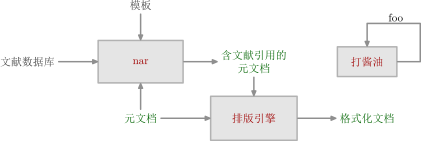

流程图
用 MetaFun 制作了一个可用于绘制简单的流程图的模块。

\usemodule[zhfonts] \defineframed [myframe] [frame=off, offset=overlay, width=2.5cm, autowidth=force, align={middle, lohi, broad}] \startMPpage input chart.mp; path defaultframe; defaultframe := fullsquare xysized (2cm, 1cm); % 结点 picture a, b, c, d, e, f, g; a := procedure("nar", defaultframe); b := as_planet(io("模板"), a, "top"); c := as_planet(io("文献数据库"), a, "left"); d := colored_io("元文档", .625darkgreen); e := as_star(colored_io("\myframe{含文献引用的元文档}", .625darkgreen), a, "right"); f := as_star(procedure("排版引擎", like(e) scaled 1.5), e, "bottom"); d := as_star(d, f, "left"); g := as_planet(colored_io("格式化文档", .625darkgreen), f, "right"); path b.frm, c.frm, d.frm, e.frm, g.frm; forsuffixes i = b, c, d, e, g: i.frm := frame(i); endfor; % 绘制流程图 for i = a, b, c, d, e, f, g: draw i; endfor; b.frm ==> a; c.frm ==> a; d.frm ==> a; d.frm ==> f; a ==> e.frm; e.frm ==> f; f ==> g.frm; picture t; pair t.out, t.in; path t.self; t := as_star(procedure("打酱油", defaultframe scaled .85), e, "right"); t.out := anchor(t, "right", 0); t.in := anchor(t, "top", 0); t.self := t.out && right * margin && up * (margin + dv(t.in, t.out)) && left * (H t.in) -- t.in; draw t; tagged_flow ("foo", "top", 0.625) t.self; t := as_star(t, c, "bottom"); t.out := anchor(t, "bottom", 0); t.in := anchor(t, "right", 0); t.self := t.out && down * margin && left * (margin + .5(bbwidth t)) && up * (2margin + bbheight t) && right * (2margin + bbwidth t) && down *(margin + .5(bbheight t)) -- t.in; draw t; tagged_flow ("foo", "top", 0.625) t.self; \stopMPpage
chart.mp:
tertiarydef a +++ b = image(draw a; draw b;) enddef;
pair __site__;
tertiarydef a && b =
if pair a:
hide(__site__ := b shifted a) a -- __site__
elseif path a:
hide(__site__ := b shifted __site__) a -- __site__
fi
enddef;
def dh(expr a, b) = abs(xpart a - xpart b) enddef;
def dv(expr a, b) = abs(ypart a - ypart b) enddef;
def H expr a = dh(a, __site__) enddef;
def V expr a = dv(a, __site__) enddef;
vardef like(expr p) =
save q; path q;
q := (llcorner p) -- (ulcorner p) -- (urcorner p) -- (lrcorner p) -- cycle;
q := q shifted -(center p);
q
enddef;
vardef frame(expr p) =
save w, h, q; numeric w, h; path q;
w := bbwidth p; h := bbheight p;
q := like(p);
q := q xscaled ((w + 2padding) / w);
q := q yscaled ((h + 2padding) / h);
q shifted (center p)
enddef;
vardef io(expr s) =
image(draw textext(s) withcolor iocolor; )
enddef;
vardef colored_io(expr s, c) =
image(draw textext(s) withcolor c; )
enddef;
vardef procedure(expr s, frame) =
image(fill frame withcolor backgroundcolor;
drawpath frame withcolor framecolor;
draw textext(s) withcolor procedurecolor;
)
enddef;
vardef as_star(expr p, ref, location) =
save s; pair s;
s := center ref - center p;
if location = "left":
s := s - (star.sx, 0);
elseif location = "right":
s := s + (star.sx, 0);
elseif location = "top":
s := s + (0, star.sy);
elseif location = "bottom":
s := s - (0, star.sy);
fi;
p shifted s
enddef;
vardef as_planet(expr p, ref, location) =
save q, s, d; picture q; pair s; numeric d;
q := as_star(p, ref, location);
if location = "left":
d := dh(0.5[lrcorner q, urcorner q], 0.5[llcorner ref, ulcorner ref]);
d := d - planet.sx;
s := (d, 0);
elseif location = "right":
d := dh(0.5[llcorner q, ulcorner q], 0.5[lrcorner ref, urcorner ref]);
d := planet.sx - d;
s := (d, 0);
elseif location = "top":
d := dv(0.5[llcorner q, lrcorner q], 0.5[ulcorner ref, urcorner ref]);
d := planet.sy - d;
s := (0, d);
elseif location = "bottom":
d := dv(0.5[ulcorner q, urcorner q], 0.5[llcorner ref, lrcorner ref]);
d := d - planet.sy;
s := (0, d);
fi;
q shifted s
enddef;
vardef anchor(expr p, base, location) =
save edge_origin, anchor, ll, ul, ur, lr;
pair edge_origin, anchor, ll, ul, ur, lr;
ll := llcorner p; ul := ulcorner p; ur := urcorner p; lr := lrcorner p;
if base = "left":
edge_origin := 0.5[ll, ul];
if location >= 0:
anchor := location[edge_origin, ul];
else:
anchor := location[ll, edge_origin];
fi;
elseif base = "right":
edge_origin := 0.5[lr, ur];
if location >= 0:
anchor := location[edge_origin, ur];
else:
anchor := location[lr, edge_origin];
fi;
elseif base = "top":
edge_origin := 0.5[ul, ur];
if location >= 0:
anchor := location[edge_origin, ur];
else:
anchor := location[ul, edge_origin];
fi;
elseif base = "bottom":
edge_origin := 0.5[ll, lr];
if location >= 0:
anchor := location[edge_origin, lr];
else:
anchor := location[ll, edge_origin];
fi;
fi;
anchor
enddef;
vardef mate_in(expr p, base, mate) =
save anchor, ll, ul, ur, lr;
pair anchor, ll, ul, ur, lr;
ll := llcorner p; ul := ulcorner p; ur := urcorner p; lr := lrcorner p;
if base = "left":
anchor := (xpart ll, ypart mate);
elseif base = "right":
anchor := (xpart lr, ypart mate);
elseif base = "top":
anchor := (xpart mate, ypart ul);
elseif base = "bottom":
anchor := (xpart mate, ypart ll);
fi;
anchor
enddef;
tertiarydef a ==> b =
begingroup
if (pair a) and (pair b):
drawarrowpath a -- b;
elseif ((path a) or (picture a)) and ((path b) or (picture b)):
save out, in, va, vb; pair out, in, va[], vb[];
va[1] := llcorner a; va[2] := urcorner a;
vb[1] := llcorner b; vb[2] := urcorner b;
if xpart va[2] < xpart vb[1]: % a 在 b 的左侧
out := 0.5[lrcorner a, urcorner a];
in := (xpart vb[1], ypart out);
elseif xpart va[1] > xpart vb[2]: % a 在 b 的右侧
out := 0.5[llcorner a, ulcorner a];
in := (xpart vb[2], ypart out);
elseif ypart va[1] > ypart vb[2]: % a 在 b 的上方
out := 0.5[llcorner a, lrcorner a];
in := (xpart out, ypart vb[2]);
elseif ypart va[2] < ypart vb[1]: % a 在 b 的下方
out := 0.5[ulcorner a, urcorner a];
in := (xpart out, ypart vb[1]);
fi;
drawarrowpath out -- in;
fi;
endgroup;
enddef;
def flow = drawarrowpath enddef;
def tagged_flow(expr tag, anchor, c) text p =
begingroup
save pos, offset; pair pos; numeric offset;
pos := point c along (p); offset := .5padding;
if anchor = "top":
pos := pos shifted (0, offset);
elseif anchor = "right":
pos := pos shifted (offset, 0);
elseif anchor = "bottom":
pos := pos shifted (0, -offset);
elseif anchor = "left":
pos := pos shifted (-offset, 0);
fi;
drawarrowpath (p);
draw scantokens("thetextext" & "." & anchor)(tag, pos);
enddef;
%%%%%%%%
% 样式
color iocolor, procedurecolor, flowcolor, framecolor, backgroundcolor;
iocolor := .375darkgray;
procedurecolor := darkred;
flowcolor := .9darkgray;
framecolor := .7white;
backgroundcolor := .9white;
drawpathoptions(withpen pencircle scaled 1.5 withcolor flowcolor);
% 留白与间距尺寸
numeric star[], planet[];
numeric margin, padding;
star.s := 4cm; star.sx := star.s; star.sy := .5star.sx;
planet.s := .2star.s; planet.sx := planet.s; planet.sy := planet.sx;
margin := .5planet.s; padding := 4;